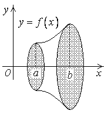
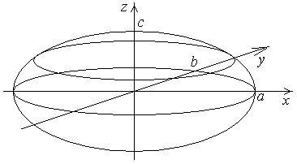
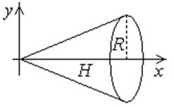

24.3.2. Вычисление объемов тел вращения
Если криволинейная трапеция, ограниченная кривой  , , вращается
вокруг оси
, , вращается
вокруг оси  , то объём тела вращения вычисляется
по формуле:
, то объём тела вращения вычисляется
по формуле:
, , вращается
вокруг оси , то объём тела вращения вычисляется
по формуле:.

Если криволинейная трапеция, ограниченная кривой , , вращается
вокруг оси
 Объем тела,
образованного вращением кривой x=f(y), c £ y £ d,
вокруг оси OY
, то .
Объем тела,
образованного вращением кривой x=f(y), c £ y £ d,
вокруг оси OY
, то .
Объем тела,
образованного вращением кривой x=f(y), c £ y £ d,
вокруг оси OY
, то .Если криволинейный сектор, ограниченный кривой и лучами и
Объем тела
образованного вращением криволинейного сектора вокруг полярной оси
, вращается вокруг полярной оси, то .
Величина может быть также
вычислена интегрированием по  :
:
:
Объем тела,
образованного вращением кривой x=f(y), c £ y £ d,
вокруг оси OY, при интегрировании по x
,
Найти объем тела, образованного вращением вокруг оси фигуры, ограниченной кривой и прямой  .
.
фигуры, ограниченной кривой и прямой . Решение:
.
Найти объем тела эллипсоида .
Решение:
,
 ,
,.

Найти объем конуса с высотой и
радиусом основания  .
.
.Решение:
.
